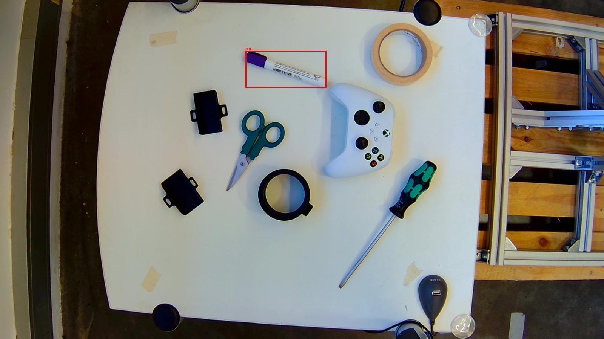
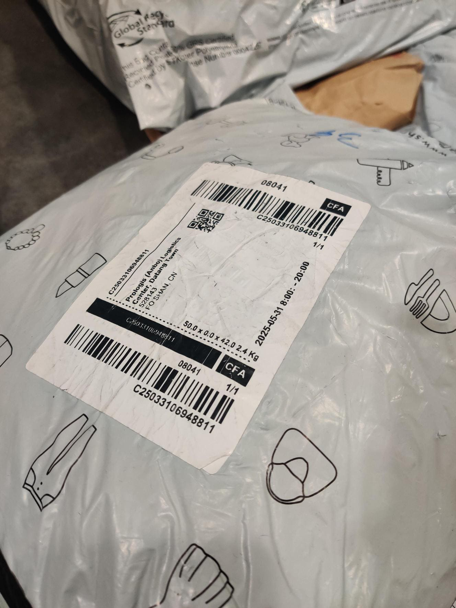
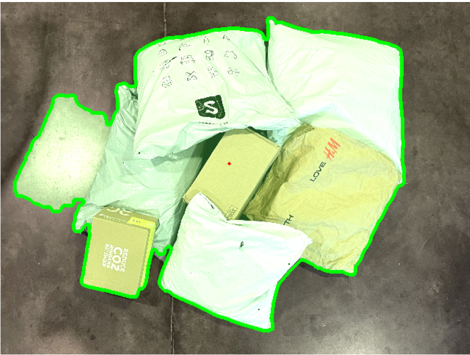

El primero es un programa que a partir de una imagen y un promps del usuario pidiento "pick X" el programa busca el X en la imagen y la encuadra con un caudrado rojo señalando lo que buscaba el usuario. Es un programa que lo he hecho en python con ayuda de ia sobretodo para entender todo de las librerias y aun asi tampoco acabo de entenderlo del todo.

El segundo mini proyecto es un programa que detecta el codigo de barras de una imagen y además de tener que detectar la posicion tiene que ser capaz de recoger los numeros o letras del codigo.He logrado substraer algunos codigos de barras de las imagenes, pero no de todas, ya que no he logrado que el programa se adapte a todas las imagenes.

El tercer mini proyecto es un programa que debe detectar unos paquetes que hay en la imagen y ademas de detectarlos debe ser capaz de detectar la superficie mas optima para agarrar el paquete y dibujar una flecha roja en sentido mas optimo para que un robot lo agarre. Es un programa que se usa en robots que cogen y ordenan paquetes.

En definitiva, he logrado hacer dos mini-proyectos decentes y el ultimo se me ha complicado, pero lo importante es todo el aprendizaje que le he sacado, y que python solo lo toqué un poco al inicio del curso de DAM y no habia hecho nada mas. El hecho de haber vuelto a adentrarme en el mundo de python me ha gustado, además de que he visto muchas cosas sobre librerias e IAs que me han parecido muy interesantes.